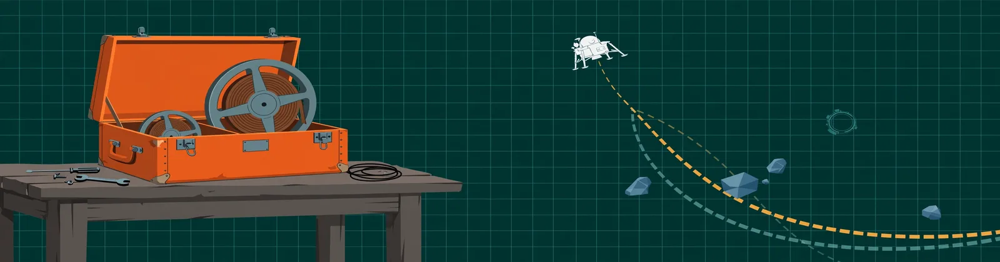

X-Ray Time Machine.
Keep the past. Change one thing. Watch what follows.
60 TICKS / SECOND
NO CRYSTAL BALL
Help \u00b7 how this machine works
Flying. \u2190 and \u2192 rotate, \u2191 thrusts, Space fires (Recoil & Rocks only). P plays or pauses, N steps one tick, R starts a new flight, F2 toggles the X-Ray. The recorder holds up to 60 seconds at 60 ticks a second.
The recorder. Every flight is recorded as it happens \u2014 every input, and the seed that drives every random draw. Drag the timeline or use Back 5 seconds to revisit any moment: rewind restores the saved state at that tick; it does not run physics backward. The past is kept exactly.
Branching. From any tick, Branch keeps the original flight intact as an amber ghost and starts a new future from that moment. Four experiments: Try different controls (fly it yourself from there), Change one rule (the original inputs replay with exactly one rule altered \u2014 gravity, recoil, bounciness, engine), Predict, then reveal (commit to a guess before the branch plays), and Unchanged replay (the same inputs again \u2014 the two ships should never separate).
Verify. \u201cVerify this recording\u201d re-runs the whole flight from its first state using only the recorded inputs and compares every tick. If it says PASS, the recording is a receipt, not a story.
The Recoil Experiment. The Recoil & Rocks toolbar button loads a flight that docked with its engine disabled \u2014 steered entirely by the kick of its own gun. Branch its recoil strength and see whether the same firing plan still makes the dock.
What is honest here. All numbers describe this simulation only. Collisions are circles; the lander uses a stated contact box; recoil is an instantaneous change of velocity; there is no spin transfer. Same-input comparisons stop at the original\u2019s end \u2014 no future ghost is invented.
On a touch screen: everything except live flying is tappable — the demos, the recorder, the branch buttons and the timeline all work by touch. Flying a new flight by hand takes the arrow keys and Space.
02 / Make a different future
03 / Event receipts
Select an event to inspect its recorded moment. Receipts report what the model computed.